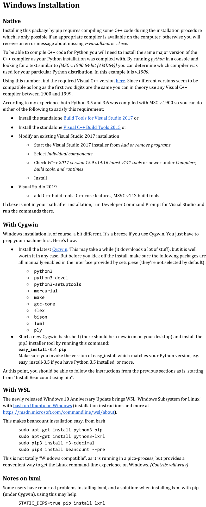
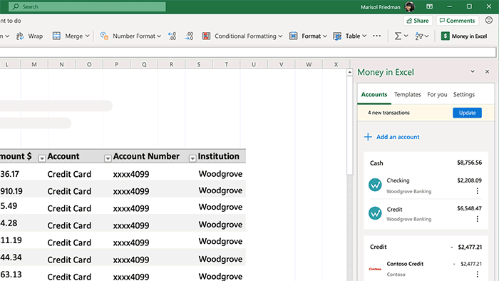

Beancount 记账——起步
条评论第一次记账，那还是很久之前的事了。最开始是中学时候使用烂笔头记账，当然主要是生活开销啊，后来记着记着就记不动了；之后是大学突然心血来潮用Excel记账，然后就没有然后了……
这次无限量续费的假期中，看着支付宝账单，我又动了记账的想法。这次不是膨胀，不是一时的心血来潮，而是有计划、有目的地训练自己的记账习惯和记账方式，最终确暂时确定了以Beancount为主的记账方式。
在记账之前，首先需要一个好的记账工具，在大致地了解一些常用的记账软件后，Beancount很好地抓住了处女座的痛点：
- 免费，自定义程度高：好用的软件当然不便宜，比如财智8，看了看价格就不想继续了解了；
- 纯文本记账：账单数据存储在本地，并且是可读的，所以不会存在软件停止开发了账单数据怎么处理的问题；
- 自动化程度：Beancount可以导入账单，这才是可以坚持记下去的原因啊.
起步
在参考了一些文档[1][2][3][4][5]后，我在 Windows 10 上尝试安装了 Beancount 软件，当然，没有安装成功——好像大佬们都是Linux用户，Windows上的安装官方也有给出指导：

然而我的笔记本上装有WSL，所以就直接省事儿用WSL版的。（ps. LxRunOffline 是一个可以安装、管理WSL(Windows Subsystem for Linux)的软件）
我的工作流
良好的支付习惯可以为记账开一个好头，目前我的选择是：
- 使用支付宝作为主要的支付手段，微信作为辅助（尽量少用）；
- 各银行卡仅用作转账工具，消费不直接从银行卡扣款，因为支付宝的账单信息更详尽一些；
- 关闭花呗、零钱通（这个主要是由于需要身份证实名制，很烦）、白条（这个还在努力关闭中），简化账单；
- 日常的现金使用纯记账 [6]管理，对账日统计到账本上.
按照这样的习惯进行日常支付，每个月整理一次账单。在对账日从支付宝、微信和各银行网银下载账单后，参考前人的做法导入账单即可。
除了一般的收支流水，Beancount也可以管理证券交易、做预算等等，Beancount也在不断成长中。对这里[7]抓取基金净值的代码稍加修改，就可以把基金市价合并到账簿里了。
Appendix A. 纯记账
纯记账这个软件也不错，是移动端我比较偏爱的，其可以搭配坚果云同步账单数据。但是在记录上对比纯文本记账略有不足，比如网购账单拆分、AA付款这种设计三个以上帐户的记录就显得捉襟见肘，目前我主要用它管理现金账单。
Appendix B. Microsoft Excel - Money
本月下旬 Microsoft 正式将 Office 365 更名为Microsoft 365（见资讯），折回倒是加量不加价，其中一个有意思的功能是 Excel Money，其支持与银行账户、信用卡信息关联，可以自动导入交易和账户余额等信息，然而中国区是否会有这个功能还不知道，等等看暂不支持该功能（其实更新的Microsoft 365在国区几乎没啥更新功能），可能是由于金融帐户的问题吧，就像网易的记账也不支持绑定支付宝同步了。

Appendix C. GnuCash
与GnuCash比较起来：
- 纯文本，可读性更好，但是当遇到不可抗力查账时，这也是个弱点；可以使用git进行版本控制，当然GnuCash也会有log，具体作用尚未了解；
- 账单导入，GnuCash可以导入
.csv文件，怎么用还没看； - 多帐户记账这一点GnuCash也能很好的完成，下拉列表选择帐户似乎比beancount操作更为简便
References:
- 1.Beancount Users's Manual ↩
- 2.Beancount复式记账：接地气的Why and How from zsx's Blog ↩
- 3.Beancount复式记账（一）：为什么 from BYVoid ↩
- 4.Beancount —— 命令行复式簿记 from wzyboy’s blog ↩
- 5.Beancount使用经验 from LeeDC Blog ↩
- 6.纯记账 ↩
- 7. 用Python抓取天天基金网基金历史净值数据 ↩
本文标题：Beancount 记账——起步
文章作者：Michael Chen
发布时间：2020-04-04
最后更新：2022-02-20
原始链接：https://mchen.xyz/post/beancount-getting-started.html
版权声明：本博客所有文章除特别声明外，均采用 CC BY-NC-SA 3.0 CN 许可协议。转载请注明出处！